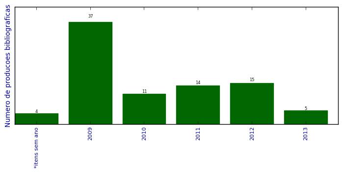

UFSM - Análise do Lattes
Total de produção bibliográfica

Número total de itens: 86
2013
| 1. | BASTIANI, E. ; LIBRELOTTO, GIOVANI RUBERT. Pervasive Computing Applied to the Care of Patients with Dementia in Homecare Environments. International Journal of UbiComp (IJU). v. 4, p. 1, 2013. [ citações Google Scholar | citações Microsoft Acadêmico | busca Google ] Qualis: Não identificado (International Journal of UbiComp (IJU)) |
| 2. | FREITAS, L. O. ; PEREIRA, R. T. ; PEREIRA, H. ; MARTINI, R. G. ; MOZZAQUATRO, B. ; KASPER, J. ; Librelotto, G.R.. Ontological Representation and an Architecture for Homecare Pervasive Systems. Em: Ricardo Martinho; Rui Rijo; Maria Manuela Cruz-Cunha; João Varajão. (Org.). Information Systems and Technologies for Enhancing Health and Social Care. 1ed. 2013.v. 1, p. 215-234. [ citações Google Scholar | citações Microsoft Acadêmico | busca Google ] |
| 3. | LEMOS, A. K. ; Librelotto, G.R.. Uso de ambientes virtuais como instrumento facilitador de aprendizagem. Em: X Evidosol/VII Ciltec-online (X Encontro Virtual de Documentação em Software Livre (EVIDOSOL) e VII Congresso Internacional de Linguagem e Tecnologia online (CILTEC-online), 2013. [ citações Google Scholar | citações Microsoft Acadêmico | busca Google ] Qualis: Não identificado (X Evidosol/VII Ciltec-online (X Encontro Virtual de Documentação em Software Livre (EVIDOSOL) e VII Congresso Internacional de Linguagem e Tecnologia online (CILTEC-online)) |
| 4. | MARAN, V. ; AUGUSTIN, I. ; SACCOL, D. ; LIBRELOTTO, Giovani R.. Uma definição ontológica de elementos de contexto relevantes na adaptação de documentos em ambientes hospitalares pervasivos. Revista Brasileira de Computação Aplicada. v. 5, p. 1, 2013.  [ citações Google Scholar | citações Microsoft Acadêmico | busca Google ] Qualis: B5 |
| 5. | SOARES, K. ; BASTIANI, E. ; LIBRELOTTO, Giovani R.. Ontocancro 2.0: Um Estudo de Caso para a Aplicação da Ontologia da em Vias Metabólicas Ligadas ao Processo Carciogênico. Revista do CCEI. 2013. [ citações Google Scholar | citações Microsoft Acadêmico | busca Google ] |
2012
| 1. | DALTROZO ILHA, D. ; LIBRELOTTO, Giovani R.. A Escola no Meio Digital: Novos Desafios do Ensinar e do Aprender. Vidya (Santa Maria. Impresso). v. 32, p. 5, 2012. [ citações Google Scholar | citações Microsoft Acadêmico | busca Google ] Qualis: Não identificado (Vidya (Santa Maria. Impresso)) |
| 2. | FREITAS, L. O. ; Librelotto, G.R. ; PEREIRA, H. ; KASPER, J. ; MARTINI, R. G. ; MOZZAQUATRO, B. ; PEREIRA, R. T.. Applying pervasive computing in an architecture for homecare environments. Em: IEEE 9th International Conference on Ubiquitous Computing and Intelligence/IEEE 9th International Conference on Autonomic and Trusted Computing, 2012. [ citações Google Scholar | citações Microsoft Acadêmico | busca Google ] Qualis: A1 (International Conference on Ubiquitous Computing) |
| 3. | FREITAS, L. O. ; LIBRELOTTO, Giovani R.. OntoHealth: A System to Process Ontologies Applied to Health Pervasive Environment. International Journal on Computer Science and Engineering. 2012. [ citações Google Scholar | citações Microsoft Acadêmico | busca Google ] |
| 4. | FREITAS, L. O. ; PEREIRA, R. T. ; PEREIRA, H. ; MARTINI, R. G. ; MOZZAQUATRO, B. ; KASPER, J. ; Librelotto, G.R.. A Methodology for an Architecture of Pervasive Systems to Homecare Environments. Em: CENTERIS 2012 - Conference on ENTERprise Information Systems / HCIST 2012 - International Conference on Health and Social Care Information Systems and Technologies, v. 5, p. 820-829, 2012. [ citações Google Scholar | citações Microsoft Acadêmico | busca Google ] Qualis: Não identificado (CENTERIS 2012 - Conference on ENTERprise Information Systems / HCIST 2012 - International Conference on Health and Social Care Information Systems and Technologies) |
| 5. | GEBERT, C. ; KASPER, J. ; SACCOL, D. ; LIBRELOTTO, Giovani R.. Estudo preliminar de métodos para execução de regras ativas através de detecção de eventos temporais em sistemas de gerenciamento de banco de dados. Em: XXVII Jornada Acadêmica Integrada da UFSM, 2012, Santa Maria. XXVII Jornada Acadêmica Integrada da UFSM, 2012. [ citações Google Scholar | citações Microsoft Acadêmico | busca Google ] |
| 6. | KASPER, J. ; GEBERT, C. ; LIBRELOTTO, Giovani R. ; SACCOL, D.. Estudo de métodos para execução de regras ativas através da detecção de eventos temporais em sistemas de gerenciamento de bancos de dados. Em: XI Simpósio de Informática da UNIFRA, 2012. [ citações Google Scholar | citações Microsoft Acadêmico | busca Google ] Qualis: Não identificado (XI Simpósio de Informática da UNIFRA) |
| 7. | LIBRELOTTO, Giovani R. ; BASTIANI, E. ; SOARES, K.. Uma abordagem para monitoramento de pacientes com Alzheimer em ambientes homecare pervasivos. Em: WIM 2012 - XII Workshop de Informática Médica, 2012. [ citações Google Scholar | citações Microsoft Acadêmico | busca Google ] Qualis: B4 (Workshop de Informática Médica) |
| 8. | LIBRELOTTO, Giovani R. ; PEREIRA, R. T. ; AZEVEDO, R. P. ; MOMBACH, J. C. M.. Utilizando a Ontocancro para traçar o perfil das vias de manutenção da estabilidade genômica. Em: WIM 2012 - XII Workshop de Informática Médica, 2012. [ citações Google Scholar | citações Microsoft Acadêmico | busca Google ] Qualis: B4 (Workshop de Informática Médica) |
| 9. | LOOSE, M. B. ; SACCOL, D. ; Librelotto, G.R.. Ontologias para a Representação de Cláusulas FLWOR XQuery. Revista do CCEI. v. 16, p. 224-237, 2012. [ citações Google Scholar | citações Microsoft Acadêmico | busca Google ] Qualis: B5 |
| 10. | MARTINI, R. G. ; LIBRELOTTO, Giovani R.. Personalização automática de interface para dispositivos móveis em Ambientes Pervasivos. Em: SEMISH 2012 - XXXIX Seminário Integrado de Software e Hardware, 2012. [ citações Google Scholar | citações Microsoft Acadêmico | busca Google ] Qualis: B4 (Seminário Integrado de Software e Hardware) |
| 11. | MARTINI, RICARDO GIULIANI ; LIBRELOTTO, GIOVANI RUBERT ; DE AZEVEDO, RENATO PREIGSCHADT ; FIORIN, ANDRE ; KASPER, JEFERSON ; MOZZAQUATRO, BRUNO AUGUSTI ; PEREIRA, RAFAEL. An approach to automatic customization of user interfaces for mobile devices in pervasive environments. Em: 2012 XXXVIII Conferencia Latinoamericana En Informatica (CLEI), p. 1-7, 2012. [ citações Google Scholar | citações Microsoft Acadêmico | busca Google ] Qualis: B4 (CLEI) |
| 12. | PEREIRA, A. ; FACCIN, L. F. ; Librelotto, G.R. ; AUGUSTIN, I.. Uma Ontologia para um Sistema de Recomendação de Materiais Didáticos em Educação a Distância Sensível ao Estado Afetivo do Aluno. Revista do CCEI. v. 16, p. 324-341, 2012. [ citações Google Scholar | citações Microsoft Acadêmico | busca Google ] Qualis: B5 |
| 13. | PEREIRA, H. ; LIBRELOTTO, Giovani R.. Definição de uma Arquitetura para o Uso de Computação nas Nuvens em Ambientes de Computação Pervasiva. Em: SEMISH 2012 - XXXIX Seminário Integrado de Software e Hardware, 2012. [ citações Google Scholar | citações Microsoft Acadêmico | busca Google ] Qualis: B4 (Seminário Integrado de Software e Hardware) |
| 14. | SIMAO, E. ; BUGS, C. A. ; Sinigaglia, Marialva ; CASTRO, M. A. A. ; ALVES, R. C. O. ; Librelotto, G.R. ; Mombach, José CM. Induced genome maintenance pathways in pre-cancer tissues describe an anti-cancer barrier in tumor development. Molecular Biosystems (Print). v. 2012, p. 8, 2012. [ citações Google Scholar | citações Microsoft Acadêmico | busca Google ] Qualis: A1 |
| 15. | SINIGAGLIA, M. ; RYBARCZYK FILHO, J. L. ; DALMOLIN, R. J. S. ; MOREIRA, J. C. F. ; ALMEIDA, R. M. C. ; CASTRO, M. A. A. ; MOMBACH, J. C. M. ; Librelotto, G.R.. Bioinformatics Analysis of Gene Networks Involved in Genomic Stability and Cancer. Em: Chiheb Battik and Khalil Belhassine. (Org.). Bioinformatics Research: New Developments. 1ed. : Nova Science Publishers, Inc.. 2012.p. 139-164. [ citações Google Scholar | citações Microsoft Acadêmico | busca Google ] |
2011
| 1. | Bugs, Cristhian A ; Librelotto, Giovani R ; Mombach, José CM. A method to identify important dynamical states in boolean models of regulatory networks: application to regulation of stomata closure by ABA in A. thaliana. BMC Genomics. v. 12, p. S10, 2011. [ citações Google Scholar | citações Microsoft Acadêmico | busca Google ] Qualis: Não identificado (thaliana. BMC Genomics) |
| 2. | CABRAL, H. C. B. ; LIBRELOTTO, Giovani R. ; SIMAO, E. ; SINIGAGLIA, M. ; CASTRO, M. A. A. ; MOMBACH, J. C. M.. O Processamento de uma Ontologia sobre a Integração de Dados de Vias de Interação Molecular Envolvidas em Câncer. Revista Brasileira de Computação Aplicada. v. 3, p. 82-91, 2011. [ citações Google Scholar | citações Microsoft Acadêmico | busca Google ] Qualis: B5 |
| 3. | FREITAS, L. O. ; PEREIRA, R. T. ; AZEVEDO, R. P. ; KURTZ, G. C. ; MARTINI, R. G. ; MOZZAQUATRO, B. ; LIBRELOTTO, Giovani R.. Uma modelagem ontológica de hospitais pervasivos aplicada ao Ontohealth. Revista do CCEI. v. 15, p. 227-294, 2011. [ citações Google Scholar | citações Microsoft Acadêmico | busca Google ] Qualis: B5 |
| 4. | KURTZ, G. C. ; LIBRELOTTO, Giovani R. ; PERLES, L. A. ; SAGRILLO, M. R.. Um Modelo Ontológico para Representação de Conhecimento sobre Cariótipos Humanos. Revista do CCEI. v. 15, p. 378-394, 2011. [ citações Google Scholar | citações Microsoft Acadêmico | busca Google ] Qualis: B5 |
| 5. | LIBRELOTTO, Giovani R. ; AUGUSTIN, I. ; GASSEN, J. B. ; KURTZ, G. C. ; FREITAS, L. O. ; AZEVEDO, R. P. ; MARTINI, R. G.. OntoHealth: an ontology applied to pervasive hospital environments. Em: Maria Manuela Cruz-Cunha e Fernando Moreira. (Org.). Handbook of Research on Mobility and Computing - Evolving Technologies and Ubiquitous Impacts. Hershey, PA 17033. : Information Science Publishing. 2011.p. 1077-1090. [ citações Google Scholar | citações Microsoft Acadêmico | busca Google ] |
| 6. | LIBRELOTTO, Giovani R. ; FREITAS, L. O. ; FIORIN, A. ; MOZZAQUATRO, B. ; PASETTO, L. F. ; MARTINI, R. G. ; AZEVEDO, R. P. ; PEREIRA, R. T.. OntoHealth: A System to Process Ontologies Applied to Health Pervasive Environment. Em: 4th International Conference on Ubi-media Computing (U-Media 2011), p. 59-64, 2011. [ citações Google Scholar | citações Microsoft Acadêmico | busca Google ] Qualis: Não identificado (4th International Conference on Ubi-media Computing (U-Media 2011)) |
| 7. | MACEDO, R. T. ; FIORIN, A. ; LIBRELOTTO, Giovani R. ; NUNES, R. C. ; AUGUSTIN, I.. O impacto da Web 3.0 nas políticas de controle de acesso a internet. Revista do CCEI. v. 15, p. 169-185, 2011. [ citações Google Scholar | citações Microsoft Acadêmico | busca Google ] Qualis: B5 |
| 8. | MARTINS, M. O. ; VIZZOTTO, J. K. ; LIBRELOTTO, Giovani R.. Simulando o modelo ORCH-OR através de autômatos celulares quânticos. Revista Brasileira de Computação Aplicada. v. 3, p. 74-81, 2011. [ citações Google Scholar | citações Microsoft Acadêmico | busca Google ] Qualis: B5 |
| 9. | PASQUALIN, D. P. ; LIBRELOTTO, Giovani R. ; VIZZOTTO, J. K.. Cálculo de Ambientes Tipado para Aplicações Pervasivas Seguras. Em: 11a Escola Regional de Alto Desempenho, p. 111-119, 2011. [ citações Google Scholar | citações Microsoft Acadêmico | busca Google ] Qualis: B5 (Escola Regional de Alto Desempenho) |
| 10. | PASQUALIN, D. P. ; VIZZOTTO, J. K. ; LIBRELOTTO, Giovani R. ; BOIS, A. R.. uMED: Sensibilidade ao Contexto na Medicina Ubíqua. Em: 11a Escola Regional de Alto Desempenho (ERAD 2011), 2011. [ citações Google Scholar | citações Microsoft Acadêmico | busca Google ] Qualis: B5 (Escola Regional de Alto Desempenho) |
| 11. | PIOVESAN, S. D. ; AMARAL, E. M. H. ; LIBRELOTTO, Giovani R. ; MEDINA, R. D.. Ontologia para o ambiente virtual de aprendizagem Moodle. Cadernos de Informática (UFRGS). v. 6, p. 269-272, 2011. [ citações Google Scholar | citações Microsoft Acadêmico | busca Google ] Qualis: Não identificado (Cadernos de Informática (UFRGS)) |
| 12. | PIOVESAN, S. D. ; AMARAL, E. M. H. ; LIBRELOTTO, Giovani R. ; MEDINA, R. D.. Ontologia para o Ambiente Virtual de Aprendizagem Moodle. Em: VI Congresso Ibero-Americano de Telemática, 2011. [ citações Google Scholar | citações Microsoft Acadêmico | busca Google ] Qualis: Não identificado (VI Congresso Ibero-Americano de Telemática) |
| 13. | SIMAO, E. ; SINIGAGLIA, M. ; BUGS, C. A. ; CASTRO, M. A. A. ; LIBRELOTTO, Giovani R. ; MOMBACH, J. C. M.. Anti-cancer barrier during tumor evolution: a study of expression of genome maintenance pathways. Em: 7th International Conference of the Brazilian Association for Bioinformatics and Computational Biology, 2011. [ citações Google Scholar | citações Microsoft Acadêmico | busca Google ] Qualis: B4 (International Conference of the Brazilian Association for Bioinformatics and Computational Biology) |
| 14. | SINIGAGLIA, M. ; RYBARCZYK FILHO, J. L. ; DALMOLIN, R. J. S. ; MOREIRA, J. C. F. ; ALMEIDA, R. M. C. ; CASTRO, M. A. A. ; MOMBACH, J. C. M. ; LIBRELOTTO, Giovani R.. Bioinformatics Analysis of Gene Networks Involved in Genomic Stability and Cancer. Em: Helen C. Kristoff. (Org.). Cancer Biomarkers. 1ed.NY, USA. : Nova Science Publishers, Inc.. 2011.p. 139-164. [ citações Google Scholar | citações Microsoft Acadêmico | busca Google ] |
2010
| 1. | CABRAL, H. C. B. ; LIBRELOTTO, Giovani R. ; SIMAO, E. ; SINIGAGLIA, M. ; CASTRO, M. A. A. ; MOMBACH, J. C. M.. O Processamento de uma Ontologia sobre a Integração de Dados sobre Vias Metabólicas relativas ao Câncer. Em: II Simpósio de Computação Aplicada - SCA 2010, 2010. [ citações Google Scholar | citações Microsoft Acadêmico | busca Google ] Qualis: Não identificado (II Simpósio de Computação Aplicada - SCA 2010) |
| 2. | FERREIRA, G. L. ; LIBRELOTTO, Giovani R. ; AUGUSTIN, I. ; SILVA, F. L. ; MACHADO, A. ; YAMIN, A.. Extending a Middleware for Pervasive Computing to Programmable Task Management in an Environment of Personalized Clinical Activities. Em: The Fourth International Conference on Mobile Ubiquitous Computing, 2010. [ citações Google Scholar | citações Microsoft Acadêmico | busca Google ] Qualis: Não identificado (The Fourth International Conference on Mobile Ubiquitous Computing) |
| 3. | LIBRELOTTO, Giovani R. ; CABRAL, H. C. B. ; PEREIRA, R. T. ; HENRIQUES, Pedro Rangel ; SINIGAGLIA, M. ; CASTRO, M. A. A. ; SIMAO, E. ; MOMBACH, J. C. M.. Uma Integração de Dados sobre Vias Metabólicas relativas ao Câncer: a ontologia Ontocancro. Em: 10ª Conferência da Associação Portuguesa de Sistemas de Informação (CAPSI 2010), 2010. [ citações Google Scholar | citações Microsoft Acadêmico | busca Google ] Qualis: Não identificado (10ª Conferência da Associação Portuguesa de Sistemas de Informação (CAPSI 2010)) |
| 4. | LIBRELOTTO, Giovani R. ; CABRAL, H. C. B. ; SIMAO, E. ; SINIGAGLIA, M. ; CASTRO, M. A. A. ; MOMBACH, J. C. M.. O Projeto de uma Ontologia para Representar o Conhecimento de Vias Metabólicas Relativas ao Câncer. Revista do CCEI. v. 14, p. 129-147, 2010. [ citações Google Scholar | citações Microsoft Acadêmico | busca Google ] Qualis: B5 |
| 5. | LIBRELOTTO, Giovani R. ; FREITAS, L. O. ; GASSEN, J. B.. Aplicando o OntoHealth na representação de um contexto hospitalar. Em: II Simpósio de Computação Aplicada - SCA 2010, 2010. [ citações Google Scholar | citações Microsoft Acadêmico | busca Google ] Qualis: Não identificado (II Simpósio de Computação Aplicada - SCA 2010) |
| 6. | LIBRELOTTO, Giovani R. ; KURTZ, G. C.. Definindo Correlações entre Palavras-Chave e Autores no PubMed. Gestão (Curitiba). v. 11, p. 47-57, 2010. [ citações Google Scholar | citações Microsoft Acadêmico | busca Google ] Qualis: Não identificado (Gestão (Curitiba)) |
| 7. | MACHADO, A. ; LIBRELOTTO, Giovani R. ; AUGUSTIN, I.. Ferramenta para Definição de Contexto pelo Usuário-Final na Programação de Tarefas Clínicas em um Sistema de Saúde Pervasivo. Em: SBCUP II Simpósio Brasileiro de Computação Ubíqua e Pervasiva, 2010. [ citações Google Scholar | citações Microsoft Acadêmico | busca Google ] Qualis: B5 (Simpósio Brasileiro de Computação Ubíqua e Pervasiva) |
| 8. | MACHADO, A. ; VICENTINI, C. ; LIBRELOTTO, Giovani R. ; AUGUSTIN, I.. Ciência do Contexto para Tarefas Clínicas em um Sistema de Saúde Pervasivo. Em: XXXVI Conferência Latino-americana de Informática (XXXVI CLEI), 2010. [ citações Google Scholar | citações Microsoft Acadêmico | busca Google ] Qualis: Não identificado (XXXVI Conferência Latino-americana de Informática (XXXVI CLEI)) |
| 9. | MARTINS, M. O. ; VIZZOTTO, J. K. ; LIBRELOTTO, Giovani R.. Simulando o modelo ORCH-OR através de autômatos celulares quânticos. Em: II Simpósio de Computação Aplicada - SCA 2010, 2010. [ citações Google Scholar | citações Microsoft Acadêmico | busca Google ] Qualis: Não identificado (II Simpósio de Computação Aplicada - SCA 2010) |
| 10. | PASQUALIN, D. P. ; VIZZOTTO, J. K. ; LIBRELOTTO, Giovani R. ; BOIS, A. R.. Linguagens de Programação para a Computação Pervasiva. Em: ERAD 2010 - Escola Regional de Alto Desempenho, 2010. [ citações Google Scholar | citações Microsoft Acadêmico | busca Google ] Qualis: B5 (Escola Regional de Alto Desempenho) |
| 11. | Simão, Éder M. ; Cabral, Heleno B. ; Castro, Mauro A.A. ; Sinigaglia, Marialva ; Mombach, José C.M. ; LIBRELOTTO, Giovani R.. Modeling the Human Genome Maintenance network. Physica. A (Print). v. 389, p. 4188-4194, 2010. [ citações Google Scholar | citações Microsoft Acadêmico | busca Google ] Qualis: B2 |
2009
| 1. | ALBIERO, F. W. ; CHARAO, A. S. ; LIBRELOTTO, Giovani R. ; GOTTIN, V. M. ; COGO, V. V.. Guia do Estudante de Computação: Material para Auxílio e Ambientação dos Calouros. Em: XXIV Jornada Acadêmica Integrada da UFSM, 2009, Santa Maria, RS. Anais da XXIV Jornada Acadêmica Integrada da UFSM, 2009. [ citações Google Scholar | citações Microsoft Acadêmico | busca Google ] |
| 2. | ALVES, J. L. S. ; LIBRELOTTO, Giovani R.. Integrando novas funções ao software Medusa de análise gênica em Vias Ontocancro no combate ao Câncer. Em: XXIV Jornada Acadêmica Integrada da UFSM, 2009, Santa Maria, RS. Anais da XXIV Jornada Acadêmica Integrada da UFSM, 2009. [ citações Google Scholar | citações Microsoft Acadêmico | busca Google ] |
| 3. | AZEVEDO, R. P. ; PEREIRA, R. T. ; MARTINI, R. G. ; KURTZ, G. C. ; NUNES, R. C. ; LIBRELOTTO, Giovani R.. Uma abordagem alternativa para consultar o banco de dados do PubMed. Em: VII SEMINFO - Seminário de Informática RS'2009, 2009. [ citações Google Scholar | citações Microsoft Acadêmico | busca Google ] Qualis: Não identificado (VII SEMINFO - Seminário de Informática RS'2009) |
| 4. | CASSALES, G. W. ; LIBRELOTTO, Giovani R.. Uma comparação entre ferramentas computacionais para sistemas para as Ciências Contábeis. Em: XXIV Jornada Acadêmica Integrada da UFSM, 2009, Santa Maria, RS. Anais da XXIV Jornada Acadêmica Integrada da UFSM, 2009. [ citações Google Scholar | citações Microsoft Acadêmico | busca Google ] |
| 5. | FERREIRA, G. L. ; AUGUSTIN, I. ; LIBRELOTTO, Giovani R. ; SILVA, F. L. ; YAMIN, A.. Middleware for management of end-user programming of clinical activities in a pervasive environment. Em: Workshop on Middleware for Ubiquitous and Pervasive Systems, v. 389, p. 7-12, 2009. [ citações Google Scholar | citações Microsoft Acadêmico | busca Google ] Qualis: Não identificado (Workshop on Middleware for Ubiquitous and Pervasive Systems) |
| 6. | FERREIRA, G. L. ; LIBRELOTTO, Giovani R. ; SILVA, F. L. ; AUGUSTIN, I.. Adaptando o Middleware EXEHDA para o Tratamento de Atividades Clínicas. Em: XXXV Conferencia Latinoamericana de Informática (CLEI 2009), p. 37-37, 2009. [ citações Google Scholar | citações Microsoft Acadêmico | busca Google ] Qualis: B4 (Conferencia Latinoamericana de Informática) |
| 7. | FERREIRA, G. L. ; SILVA, F. L. ; LIBRELOTTO, Giovani R. ; AUGUSTIN, I. ; YAMIN, A.. Introduzindo o Gerenciando de Tarefas Clínicas em um Middleware da Computação Pervasiva. Em: IX Workshop de Informática Médica (WIM 2009), 2009. [ citações Google Scholar | citações Microsoft Acadêmico | busca Google ] Qualis: B4 (Workshop de Informática Médica) |
| 8. | FIORIN, D. ; CORDENONZI, W. H. ; LIBRELOTTO, Giovani R.. Criando um Modelo Relacional para o PubMed Central. Disciplinarum Scientia. Série Ciências Naturais e Tecnológicas. v. 8, p. 155-162, 2009. [ citações Google Scholar | citações Microsoft Acadêmico | busca Google ] Qualis: Não identificado (Disciplinarum Scientia. Série Ciências Naturais e Tecnológicas) |
| 9. | FREITAS, L. O. ; GASSEN, J. B. ; VIZZOTTO, S. ; LIBRELOTTO, Giovani R.. Utilização de Regras de Inferência na Integração de Módulos de Contexto e Tarefas com uma Ontologia de um Ambiente Hospitalar Pervasivo. Em: IV Workshop em Nanociências, 2009, Santa Maria, RS. IV Workshop em Nanociências, 2009. [ citações Google Scholar | citações Microsoft Acadêmico | busca Google ] |
| 10. | FREITAS, L. O. ; VIZZOTTO, S. ; GASSEN, J. B. ; LIBRELOTTO, Giovani R.. Modelagem de regras para inferência sobre ontologia resultante da integração de módulos de contexto e tarefas com uma ontologia de um ambiente hospitalar pervasivo. Em: XXIV Jornada Acadêmica Integrada da UFSM, 2009, Santa Maria, RS. Anais da XXIV Jornada Acadêmica Integrada da UFSM, 2009. [ citações Google Scholar | citações Microsoft Acadêmico | busca Google ] |
| 11. | GASSEN, J. B. ; FREITAS, L. O. ; VIZZOTTO, S. ; AZEVEDO, R. P. ; LIBRELOTTO, Giovani R.. Raciocínio sobre ontologias que descrevem conhecimento em um ambiente hospitalar pervasivo. Em: VII SEMINFO - Seminário de Informática RS'2009, 2009. [ citações Google Scholar | citações Microsoft Acadêmico | busca Google ] Qualis: Não identificado (VII SEMINFO - Seminário de Informática RS'2009) |
| 12. | GASSEN, J. B. ; FREITAS, L. O. ; VIZZOTTO, S. ; LIBRELOTTO, Giovani R.. Representando contexto em ambientes hospitalares pervasivos utilizando ontologias. Em: XXIV Jornada Acadêmica Integrada da UFSM, 2009, Santa Maria, RS. Anais da XXIV Jornada Acadêmica Integrada da UFSM, 2009. [ citações Google Scholar | citações Microsoft Acadêmico | busca Google ] |
| 13. | GEHRKE, N. A. ; FREITAS, L. O. ; VIZZOTTO, S. ; LIBRELOTTO, Giovani R.. Utilizando Ontologias para a Descrição de Contexto em um Ambiente Hospitalar Pervasivo. Em: IV Workshop em Nanociências, 2009, Santa Maria, RS. IV Workshop em Nanociências, 2009. [ citações Google Scholar | citações Microsoft Acadêmico | busca Google ] |
| 14. | INDRUSIAK, Lucas ; AZEVEDO, R. P. ; LIBRELOTTO, Giovani R.. Armazenamento e Pesquisa de Topic Maps em Banco de Dados Relacional. Disciplinarum Scientia. Série Ciências Naturais e Tecnológicas. 2009. [ citações Google Scholar | citações Microsoft Acadêmico | busca Google ] |
| 15. | LAUTERT, L. ; APEL, B. G. ; LIBRELOTTO, Giovani R. ; CHARAO, A. S.. Atividade de Desenvolvimento Web com a Ferramenta Google Sites para Crianças Caracterizadas com Altas Habilidades. Em: II Fórum Extensão Conta, 2009, Santa Maria, RS. II Fórum Extensão Conta, 2009. [ citações Google Scholar | citações Microsoft Acadêmico | busca Google ] |
| 16. | LIBRELOTTO, Giovani R. ; Azevedo, R.P. ; Ramalho, J.C. ; Henriques, P.R.. Topic maps constraint languages: understanding and comparing. International Journal of Reasoning-Based Intelligent Systems (Print). v. 1, p. 173-181, 2009. [ citações Google Scholar | citações Microsoft Acadêmico | busca Google ] Qualis: B4 (International Journal of Reasoning Based Intelligent Systems (Print)) |
| 17. | LIBRELOTTO, Giovani R. ; GASSEN, J. B.. XSTM Editor Um Ambiente para Especificação de Regras para a Extração de Topic Maps. Revista do CCEI. v. 13, p. 98-106, 2009. [ citações Google Scholar | citações Microsoft Acadêmico | busca Google ] Qualis: B5 |
| 18. | LIBRELOTTO, Giovani R. ; GASSEN, J. B. ; FREITAS, L. O. ; AUGUSTIN, I.. Geração de Topic Maps dirigidos por Ontologias para a Computação Sensível ao Contexto. Revista do CCEI. v. 13, p. 61-69, 2009. [ citações Google Scholar | citações Microsoft Acadêmico | busca Google ] Qualis: B5 |
| 19. | LIBRELOTTO, Giovani R. ; GASSEN, J. B. ; FREITAS, L. O. ; SILVA, F. L. ; AUGUSTIN, I.. A Definição de uma API para o Processamento de Ontologias em Hospitais Pervasivos. Em: V Simpósio Brasileiro de Sistemas de Informação (SBSI 2009), p. 01-11, 2009. [ citações Google Scholar | citações Microsoft Acadêmico | busca Google ] Qualis: B4 (Simpósio Brasileiro de Sistemas de Informação) |
| 20. | LIBRELOTTO, Giovani R. ; GASSEN, J. B. ; FREITAS, L. O. ; VIZZOTTO, J. K. ; SILVA, F. L. ; AUGUSTIN, I.. Aplicando o OntoHealth para o Processamento e Consultas de Ontologias para Ambientes Hospitalares Pervasivos. iSys: Revista Brasileira de Sistemas de Informação. v. 2, p. 51-60, 2009. [ citações Google Scholar | citações Microsoft Acadêmico | busca Google ] Qualis: B3 |
| 21. | LIBRELOTTO, Giovani R. ; GASSEN, J. B. ; RAMALHO, José Carlos ; HENRIQUES, Pedro Rangel. Topic Maps Dirigidos por Ontologias. Revista de Ciência Tecnologia. v. 15, p. 79-88, 2009. [ citações Google Scholar | citações Microsoft Acadêmico | busca Google ] Qualis: Não identificado (Revista de Ciência Tecnologia) |
| 22. | LIBRELOTTO, Giovani R. ; HENRIQUES, Pedro Rangel. Especificação e Processamento de Ontologias para a Semantic Web. Em: V Simpósio Brasileiro de Sistemas de Informação (SBSI 2009), p. 320-324, 2009. [ citações Google Scholar | citações Microsoft Acadêmico | busca Google ] Qualis: B4 (Simpósio Brasileiro de Sistemas de Informação) |
| 23. | LIBRELOTTO, Giovani R. ; LOPES, Sandra Cristina Gonçalves Silva ; KURTZ, G. C. ; TURCHETTI, Rogério Correa ; HENRIQUES, Pedro Rangel. Aplicando Topic Maps para a Representação de Mapas de Conceitos. Vidya (Santa Maria). v. 27, p. 93-107, 2009. [ citações Google Scholar | citações Microsoft Acadêmico | busca Google ] Qualis: Não identificado (Vidya (Santa Maria)) |
| 24. | LIBRELOTTO, Giovani R. ; MOMBACH, J. C. M. ; SINIGAGLIA, M. ; SIMAO, E. ; CABRAL, H. C. B. ; CASTRO, M. A. A.. An Ontology to Integrate Transcriptomics and Interatomics Data Involved in Gene Pathways of Genome Stability. Em: 4th Brazilian Symposium on Bioinformatics (BSB 2009), 2009, Porto Alegre, RS. Advances in Bioinformatics and Computational Biology. Berlin: Springer Berlin / Heidelberg, v. 5676, p. 164-167, 2009. [ citações Google Scholar | citações Microsoft Acadêmico | busca Google ] Qualis: B4 (Brazilian Symposium on Bioinformatics) |
| 25. | LIBRELOTTO, Giovani R. ; SILVEIRA, Leandro ; CABRAL, H. C. B.. Comparando Linguagens para o Armazenamento de Informação Genômica. Revista do CCEI. v. 13, p. 23-30, 2009. [ citações Google Scholar | citações Microsoft Acadêmico | busca Google ] Qualis: B5 |
| 26. | LIBRELOTTO, Giovani R. ; SINIGAGLIA, M. ; CABRAL, H. C. B. ; CASTRO, M. A. A. ; MOMBACH, J. C. M.. Ontocancro: A Database on Human Pathways of Genome Maintenance Mechanisms. Em: AB3C X-meeting 2009, 2009, Angra dos Reis, RJ. Anais do AB3C X-meeting 2009, 2009. [ citações Google Scholar | citações Microsoft Acadêmico | busca Google ] Qualis: Não identificado (AB3C X-meeting 2009, 2009, Angra dos Reis, RJ. Anais do AB3C X-meeting 2009) |
| 27. | LIBRELOTTO, Giovani R. ; VIZZOTTO, J. K. ; AUGUSTIN, I.. Um Compilador para a Linguagem Reativa Síncrona Distribuída. Em: Third Workshop on Languages and Tools for Parallel and Distributed Programming, v. 13, 2009. [ citações Google Scholar | citações Microsoft Acadêmico | busca Google ] Qualis: Não identificado (Third Workshop on Languages and Tools for Parallel and Distributed Programming) |
| 28. | MARTINI, R. G. ; KURTZ, G. C. ; FREITAS, L. O. ; GASSEN, J. B. ; LIBRELOTTO, Giovani R.. Um Sistema para o Processamento de Informações Eletrônicas de Pacientes em Hospitais Pervasivos baseado na API do Google Health. Em: VII SEMINFO - Seminário de Informática RS'2009, 2009. [ citações Google Scholar | citações Microsoft Acadêmico | busca Google ] Qualis: Não identificado (VII SEMINFO - Seminário de Informática RS'2009) |
| 29. | OLIVEIRA JUNIOR, M. A. ; LIBRELOTTO, Giovani R.. Perfil dos acadêmicos do CT da UFSM sobre o uso de software antivírus. Em: XXIV Jornada Acadêmica Integrada da UFSM, 2009, Santa Maria, RS. Anais da XXIV Jornada Acadêmica Integrada da UFSM, 2009. [ citações Google Scholar | citações Microsoft Acadêmico | busca Google ] |
| 30. | PASETTO, L. F. ; TURCHETTI, Rogério Correa ; LIBRELOTTO, Giovani R. ; BAGGIO, J. E.. Localização Física de Dispositivos em Computação Pervasiva utilizando o Gerenciador de Rede WICD. Revista do CCEI. v. 13, p. 79-88, 2009. [ citações Google Scholar | citações Microsoft Acadêmico | busca Google ] Qualis: B5 |
| 31. | PEREIRA, A. ; CHARAO, A. S. ; LIBRELOTTO, Giovani R.. Análise das Formas de Utilização do Software JODConverter para a Conversão de Arquivos em Formato de Aplicativos Office. Em: XXIV Jornada Acadêmica Integrada da UFSM, 2009, Santa Maria, RS. Anais da XXIV Jornada Acadêmica Integrada da UFSM, 2009. [ citações Google Scholar | citações Microsoft Acadêmico | busca Google ] |
| 32. | PEREIRA, H. ; PASETTO, L. F. ; TURCHETTI, Rogério Correa ; BAGGIO, J. E. ; LIBRELOTTO, Giovani R.. Utilizando o Gerenciador de Rede WICD Com Localização Física de Dispositivos. Em: X Workshop de Software Livre, 2009. [ citações Google Scholar | citações Microsoft Acadêmico | busca Google ] Qualis: Não identificado (X Workshop de Software Livre) |
| 33. | PEREIRA, R. T. ; LIBRELOTTO, Giovani R. ; HENRIQUES, Pedro Rangel. Uma Metodologia para Consultas aos Bancos de Dados do NCBI. Em: 4ª Conferência Ibérica de Sistemas e Tecnologias de Informação (CISTI 2009), 2009. [ citações Google Scholar | citações Microsoft Acadêmico | busca Google ] Qualis: B4 (CISTI) |
| 34. | SILVA, F. L. ; FERREIRA, G. L. ; RIZZETTI, T. A. ; LIBRELOTTO, Giovani R. ; AUGUSTIN, I.. Ferramenta para a Programação pelo Usuário-Final de Tarefas Clínicas em um Ambiente de Saúde Ubíquo. Em: XXXV Conferencia Latinoamericana de Informática (CLEI 2009), p. 37-37, 2009. [ citações Google Scholar | citações Microsoft Acadêmico | busca Google ] Qualis: B4 (Conferencia Latinoamericana de Informática) |
| 35. | SOARES, K. ; CABRAL, H. C. B. ; LIBRELOTTO, Giovani R.. Uma Metodologia para a Visualização das Redes Metabólicas da Ontocancro. Em: Simpósio de Informática da Região Centro do RS (SIRC 2009), 2009. [ citações Google Scholar | citações Microsoft Acadêmico | busca Google ] Qualis: Não identificado (Simpósio de Informática da Região Centro do RS (SIRC 2009)) |
| 36. | VIZZOTTO, J. K. ; LIBRELOTTO, Giovani R. ; SABRY, A.. Reasoning About General Quantum Programs over Mixed States. Em: Brazilian Symposium on Formal Methods (SBMF 2009), 2009. [ citações Google Scholar | citações Microsoft Acadêmico | busca Google ] Qualis: B4 (SBMF) |
| 37. | VIZZOTTO, S. ; GASSEN, J. B. ; FREITAS, L. O. ; LIBRELOTTO, Giovani R.. Inferências sobre Ontologias para Tomada de Decisão em um Ambiente Hospitalar Pervasivo. Em: XXI Salão de Iniciação Científica da UFRGS, 2009, Porto Alegre, RS. Anais do XXI Salão de Iniciação Científica da UFRGS, 2009. [ citações Google Scholar | citações Microsoft Acadêmico | busca Google ] |
*itens sem ano
| 1. | FREITAS, L. O. ; LIBRELOTTO, Giovani R.. OntoHealth: API para processamento de ontologia de ambiente hospitalar pervasivo (OntoHealth: Utilização de ontologias e computação pervasiva em sistemas de saúde) (Volume 1). 1 ed. 0. . [ citações Google Scholar | citações Microsoft Acadêmico | busca Google ] |
| 2. | KURTZ, G. C. ; LIBRELOTTO, Giovani R. ; PERLES, L. A. ; SAGRILLO, M. R.. Processamento de Imagens aplicado ao Reconhecimento do Cariótipo e ao Processo de Detecção do Centrômero. 1 ed. 0. . [ citações Google Scholar | citações Microsoft Acadêmico | busca Google ] |
| 3. | MARTINI, R. G. ; LIBRELOTTO, Giovani R.. Personalização de Interfaces Móveis em Ambientes Pervasivos. 1 ed. 0. . [ citações Google Scholar | citações Microsoft Acadêmico | busca Google ] |
| 4. | PEREIRA, H. ; LIBRELOTTO, Giovani R.. Arcp: Uma arquitetura para a utilização de computação nas nuvens nos ambientes de computação pervasiva. 1 ed. 0. . [ citações Google Scholar | citações Microsoft Acadêmico | busca Google ] |
(*) Relatório criado com produções desde 2009 até HOJE
Data de processamento: 11/04/2014 11:09:25